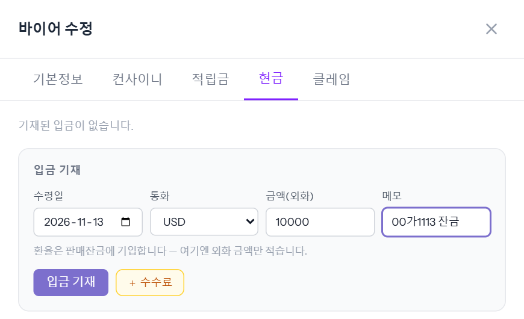
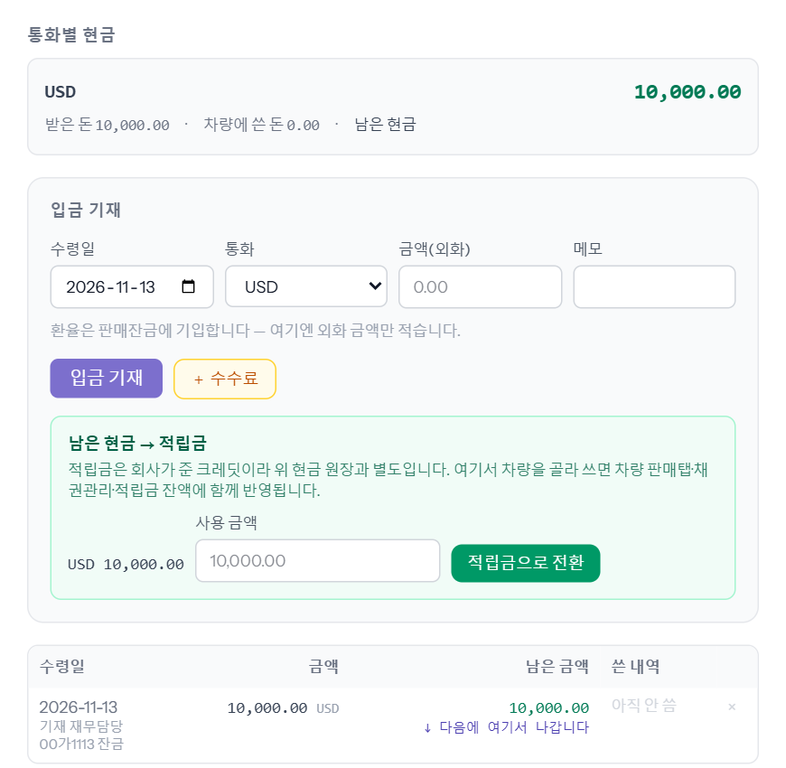
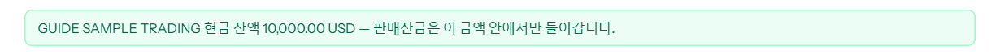
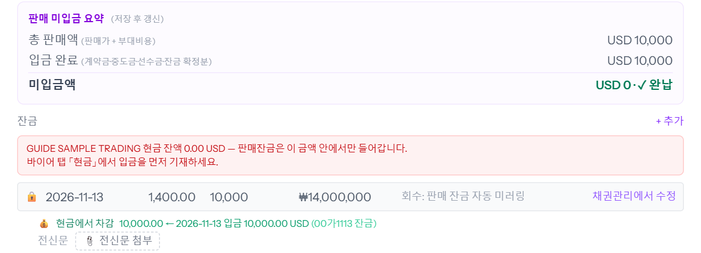
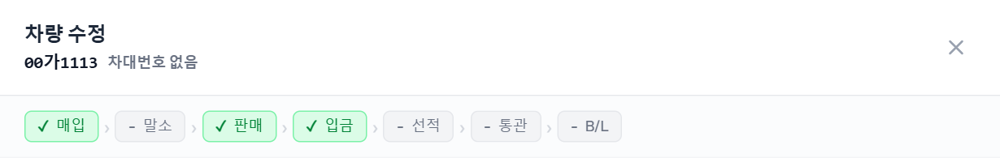
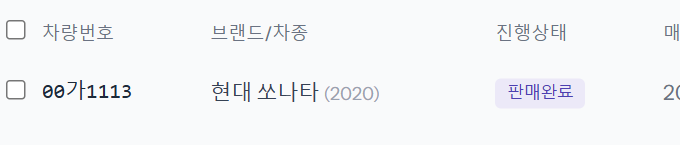
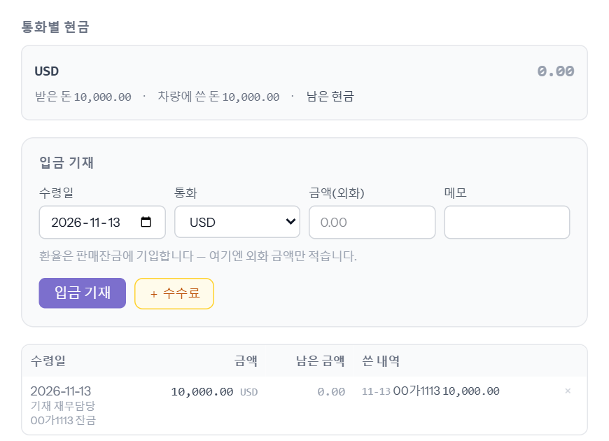

바이어가 보낸 돈이 들어오면 ERP에 기록하는 단계입니다. 재무가 합니다. 다 받으면 미입금이 0이 되고 진행상태가 「판매완료」로 바뀝니다.
회사마다 순서가 다릅니다
- heymanerp · karabaerp — 「바이어 현금」을 씁니다. 바이어가 보낸 돈을 바이어 화면에 먼저 적고(①), 그다음 차량에 잔금을 넣습니다(②). 차량 잔금은 바이어 현금이 남은 만큼만 들어갑니다.
- ssancarerp — 바이어 현금을 쓰지 않습니다. ①을 건너뛰고 ②부터 합니다.
※ 2026-11-13 3사 설정 확인. 이 씬의 그림은 바이어 현금 원장을 쓰는 회사의 화면입니다.
① 바이어가 보낸 돈 적기 (heymanerp · karabaerp)
1단계
바이어 메뉴 → 그 바이어 → 「현금」 탭 → 입금 기재
왼쪽 메뉴 「바이어」에서 바이어를 눌러 열고 「현금」 탭으로 갑니다. 「입금 기재」 칸에 받은 돈을 적습니다.
- 수령일 — 돈이 들어온 날.
- 통화 — 바이어가 보낸 통화. 차량의 판매 통화와 같아야 그 차에 쓸 수 있습니다.
- 금액(외화) — 바이어가 보낸 금액 그대로. 환율은 여기 적지 않고, 차량 잔금을 넣을 때 적습니다.
- 메모 — 어느 차 잔금인지 등(선택).

[입금 기재]를 누르면 「입금을 기재했습니다.」가 뜨고, 위 「통화별 현금」에 남은 현금(USD 10,000.00)이, 아래 목록에 그 입금이 「아직 안 씀」으로 보입니다.

그 사이에 보이는 「남은 현금 → 적립금」은 남은 돈을 적립금으로 돌릴 때만 씁니다. 지금은 누르지 않습니다.
② 차량에 잔금 넣기
2단계
차량 판매 탭 → 「잔금」 [+ 추가]
차량 관리에서 차를 열고 「판매」 탭을 아래로 내려 「잔금」 오른쪽 [+ 추가]를 누릅니다. 바이어 현금을 쓰는 회사는 그 위에 지금 쓸 수 있는 현금이 초록색으로 보입니다.

새 줄에 왼쪽부터 넣습니다.
- 날짜 — 돈이 들어온 날. 날짜를 넣으면 그날 환율이 옆 칸에 자동으로 들어옵니다(예시에서는 1,323.4).
- 환율 — 실제로 원화로 바꾼 환율이 다르면 고칩니다. 정산은 이 환율로 계산됩니다. 예시는 1,400으로 고쳤습니다.
- 금액 — 이번에 받은 금액(판매 통화 기준). 예시는 10,000. 옆에 원화 환산(₩14,000,000)이 자동으로 나옵니다.
나눠서 받으면 받을 때마다 줄을 하나씩 추가합니다.
3단계
[수정 저장] — 재무가 넣은 잔금은 바로 확정됩니다
창 오른쪽 아래 [수정 저장]을 누릅니다. 재무 계정은 확인 창 없이 바로 저장되고, 그 잔금은 확정된 입금이 됩니다.
차를 다시 열면 이렇게 바뀌어 있습니다.
- 「판매 미입금 요약」 — 입금 완료 USD 10,000, 미입금액 USD 0 · ✓ 완납.
- 잔금 줄은 🔒 잠긴 줄이 되고, 오른쪽에 「채권관리에서 수정」이 붙습니다. 이후 금액·날짜·환율을 고칠 때는 그걸 눌러 채권관리에서 고칩니다.
- 바이어 현금을 쓰는 회사는 줄 아래에 「현금에서 차감 10,000.00 ← 2026-11-13 입금」이 보이고, 위 현금 잔액이 0이 되어 붉게 바뀝니다. 다음 잔금을 넣으려면 바이어 현금에 입금을 먼저 적어야 합니다.

줄 아래 「전신문 첨부」로 바이어가 보낸 송금 전신문 파일을 붙여 둘 수 있습니다.
4단계
다 받으면 「판매완료」
창 위 진행 줄의 「입금」에 초록색 체크가 붙습니다.

목록의 진행상태가 「판매중」에서 「판매완료」로 바뀌고, 미수 때문에 붉던 줄 배경이 사라집니다.

바이어 현금 탭에서도 「차량에 쓴 돈」 10,000.00, 남은 현금 0.00, 쓴 내역에 00가1113으로 보입니다.

알아 둘 것
- 바이어 현금을 쓰는 회사에서 현금이 모자라면 잔금 저장이 막힙니다. 바이어 「현금」 탭에 받은 돈을 먼저 적으세요.
- 원화(KRW) 판매는 그 바이어에게 원화 입금을 한 번이라도 적어 둔 경우에만 바이어 현금에서 빠집니다. 원화 입금을 적지 않은 바이어는 바로 잔금을 넣으면 됩니다(2026-11-13부터).
- 재무·관리가 아닌 사람(영업 등)이 넣은 잔금은 확정 전으로 들어가 「재무 처리」 메뉴 「판매 잔금」 탭에 쌓이고, 재무가 [재무 처리 완료]를 눌러야 반영됩니다.
- 한 바이어가 여러 차 값을 한꺼번에 보냈을 때 나누는 방법은 씬 「바이어 정산현황」을 보세요.
- 다음은 수출통관이 수출 탭을 채우는 씬 「수출 탭 — 위에서 아래로」입니다.